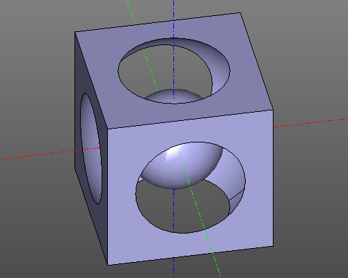

ZenCad.
Скриптовый CAD для праведных прогеров.

Что это?
ZenCad — параметрическое 3D-моделирование на Python с геометрическим ядром OpenCascade. Скрипт создаёт точную BREP-геометрию, которую можно показать, проверить и экспортировать без ручного построения в редакторе.
ZenCad подходит для прототипирования, подготовки моделей к 3D-печати и построения геометрии по расчётам Python. Инструкции для разработки и установки находятся на странице Установка.
Быстрый старт
Установка и запуск редактора:
python3 -m pip install "zencad[gui]"
zencad
Сохраните модель в Python-файл и откройте его в редакторе:
import zencad as z
model = z.box(200, center=True) - z.sphere(120) + z.sphere(60)
z.display(model)
z.show()